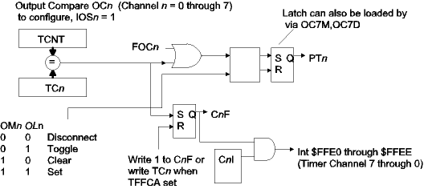

| Previous Section | Next Section | Index | Questions | Search the Text |
Output Compare channels are useful for generating pulses or square waveforms. To configure a channel, n, for Output Compare, the timer module must be enabled (TEN=1) and the IOSn bit in TIOS must be changed from its default of 0 to 1. TCNT is continuously compared with TCn, and when the values match the CnF flag bit is set. Optionally, depending on the setting of the OMn and OLn bits, the PTn pin is set, cleared, or toggled. When either or both OMn and OLn are 1, IOSn is 1 and TEN is 1, then pin PTn is forced to be an output pin, and the value stored into PTT is ignored even if the direction bit in DDRT is set for output.

The CnF flag is cleared by writing a 1 to the bit, the traditional 68HC12 approach. However, if the TFFCA control bit is set then writing TCn will clear the flag. This can save an instruction in most applications, however as mentioned previously it can cause problems in applications which are also reading TCNT directly. As when the channel is used for Input Capture, setting the CnI bit enables interrupt requests when CnF gets set.
The control and status registers TIOS, CFORC, TSCR1, TSCR2, TCTL1, TCTL2, TIE, and TFLG1 are used for Timer Output Compare channels, as well as the 16-bit word data registers TCn (TC0 through TC7). The bits are shown in the table below. As in the case of using the channels for Input Capture, it is important to use bset and bclr to configure a channel if the configurations of the other channels are unknown.
| Timer Output Compare Control and Status Bits
(Bits in red are not used by output compare function) (Bits in blue are described under Timer Count) | ||||||||
| Register | Bit 7 | Bit 6 | Bit 5 | Bit 4 | Bit 3 | Bit 2 | Bit 1 | Bit 0 |
|---|---|---|---|---|---|---|---|---|
| TIOS | IOS7 | IOS6 | IOS5 | IOS4 | IOS3 | IOS2 | IOS1 | IOS0 |
| CFORC | FOC7 | FOC6 | FOC5 | FOC4 | FOC3 | FOC2 | FOC1 | FOC0 |
| TSCR1 | TEN | TSWAI | TSFRZ | TFFCA | 0 | 0 | 0 | 0 |
| TSCR2 (was originally TMSK2) | TOI | 0 | 0 | 0 | TCRE | PR2 | PR1 | PR0 |
| TCTL1 | OM7 | OL7 | OM6 | OL6 | OM5 | OL5 | OM4 | OL4 |
| TCTL2 | OM3 | OL3 | OM2 | OL2 | OM1 | OL1 | OM0 | OL0 |
| TIE (was originally TMSK1) | C7I | C6I | C5I | C4I | C3I | C2I | C1I | C0I |
| TFLG1 | C7F | C6F | C5F | C4F | C3F | C2F | C1F | C0F |
The CFORC register is particularly interesting. This register always reads as $00. Writing a 1 bit will force the action to be taken for an output compare to happen immediately, except the interrupt flag is not set. This provides a way to asynchronously alter the value of a Port T pin being used for output compare. Remember that in this circumstance writing to the PTT register has no effect, so this is the only way to force a value. For example, we can set PT0 to a 1 when channel 0 is being used for output compare with this code segment:
bset TCTL2 #$3 ; OM0 and OL0 set to 1, compare causes set
bset CFORC #$1 ; Force the set
Now let's investigate some examples.
The following program uses polling to generate a square wave with a frequency of 100 kHz. Channel 3 is used to generate the signal at pin PT3. Note that a frequency of 100 kHz is a period of 10 microseconds; however the time between output level changes is half of that, or 5 microseconds. This program is also here, and can be run in the simulator here. Check the box labeled "Log Output" under the Clock & Timer section to have the program write the times (in system clock units, 1/24 microseconds) when the output changes.
#include registers.inc
org PRSTART
bset TSCR1 #$90 ; Set TEN and TFFCA bits
bset TIOS #$8 ; Set IOS3 (channel 3 is output compare)
bset TCTL2 #$40 ; Set OL3 (Toggle PT3 on successful compare)
ldd TCNT ; Get current time
addd #5*24 ; add 5 microseconds of counts
std TC3 ; Flag sets in 5 microseconds
L1: brclr TFLG1 #$8 L1 ; "Wait" until C3F flag sets.
addd #5*24 ; Calculate time for next transition
std TC3 ; Set time and reset flag.
bra L1
The first three instructions perform the initialization. We will be toggling the PT3 pin every time TC3 equals TCNT. Since we want the first edge to occur 5 microseconds in the future, we fetch the value of TCNT, add 120 (five times 24 clocks per microsecond) and store into TC3. This will reset the C3F flag since TFFCA is set. Five microseconds from the fetch of TCNT, TCNT will equal TC3, PT3 will change level, and the C3F flag will be set. We add 120 to the current value of TC3 because we want the next edge to occur 5 microseconds from the last edge. Storing into TC3 will clear C3F. We wait for C3F to be set again, and the process repeats.
The maximum period is when we add 65535 to TC3, and is a bit more than 5.4 milliseconds. The minimum period is limited by the ability to execute the four instruction loop in half of the period. If the setting is too fast, then the new value of TC3 will be smaller than the value of TCNT when TC3 is loaded. This means that T3F will not be set for roughly 2.7 milliseconds. Suddenly, what would be a small period becomes one of the largest!
We can, of course, use an interrupt service routine to update TC3, making the signal generation interrupt driven. The minimum period will be considerably longer because of the time taken to enter and leave the interrupt service routine. In the following example, we will use interrupts and add an additional twist.
In the preceding example, the square wave was symmetrical, so that the 0 level and 1 level periods were identical. In this example, the periods can be different. In addition, the generator will be interrupt driven. On alternate interrupts we need to use different periods until the next interrupt and change the output pin to alternate levels. This appears to be an application for a state machine with two alternating states.
The program below generates an asymmetrical square wave using timer channel 0, pin PT0. Variable lotime and hitime hold the time in TCNT units that the output level will be low and high, respectively. The source code for the program is also here and can be run in the simulator here. The simulator used the DBUG12 emulator, so the Go button needs to be pressed twice to start the program execution.
#include registers.inc
org DATASTART ; Data Memory (internal RAM)
state: ds 2 ; State pointer
lotime: ds 2 ; Time (in TCNT counts) for low level
hitime: ds 2 ; TIme (in TCNT counts) for high level
org PRSTART ; Program memory
entry:
; Initialization code
lds #DATAEND ; Initialize stack pointer
movw #state1 state ; Initialize data memory
movw #10*24 lotime ; Low for 10 microseconds
movw #20*24 hitime ; High for 20 microseconds
The minimum values for the low and high periods are limited by the execution time of the interrupt service routine. In this particular case, we cannot have the 5 microsecond period of the preceding example because it is too short!
movw #tc0int UserTimerCh0 ; Set interrupt vector using D-BUG12
bset TIOS #1 ; Set IOS0 bit
bset TSCR1 #$90 ; Set TEN and TFFCA bits
bset TIE #$1 ; Set C0I bit
bset TCTL2 #$3 ; Set OM0 OL0 so compare sets PT0 to 1
ldd TCNT ; Set initial count
addd lotime
std TC0
We initialize the timer as though the initial output level is 0. So the initial delay is lotime, and when C0F sets PT0 will change level to 1. We don't use toggle, but an explicit change to 1. If we used toggle and happened to miss an interrupt, then the low and high periods would reverse - possibly a serious problem!
cli ; allow interrupts
; Idle process
idle: wai
bra idle
Same old idle process - does nothing but wait for an interrupt.
; Interrupt Service Routine
tc0int:
ldx state ; Jump to current state
jmp 0,x
Two states, state1 and state2 for change to high and change to low. The state variable was initialized to state1, so it will be executed first.
state1: ; Changed to High
bclr TCTL2 #$1 ; Clear OL0 so next match
; changes PT0 to 0
OM0 is still set, so the action is "Clear to zero."
ldd TC0 ; Set time for next match
addd hitime
std TC0
movw #state2 state ; Set next state
rti
state2: ; Changed to Low
bset TCTL2 #$1 ; Set OL0 so next match changes
; PT0 to 1
ldd TC0 ; Set time for next match
addd lotime
std TC0
movw #state1 state ; Set next state
rti
Continue with The Special Case of Channel 7.
Return to the Index.